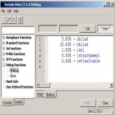

| Symbol | Meaning |
| bblind | the big blind amount |
| sblind | the small blind amount |
| ante | the current pre-deal ante requirement |
| buyin | the tournament buyin in dollars |
| lim | the current table limit 0=NL 1=PL 2=FL |
| isnl | (lim == 0) No Limit |
| ispl | (lim == 1) Pot Limi |
| isfl | (lim == 2) Fixed Limit |
| isdon | true if you play a double-or-nothing tournament. The conditions for istournament must apply and the title must also contain a DON identifier |
| ismtt | true if you play a multi-table-tournament. The conditions for istournament must apply and the title must also contain a MTT identifier |
| issng | true if you play a single-table-tournament All tournaments that can’t be recognized neither as MTT nor as DON will qualify as SNGs.. |
| istournament | true if any type of tournament table is detected. This feature works automatically, based on title-strings of the poker-table, blind-levels, sum of chips at the table, etc. |
| isfinaltable | true if you play the final table of a MTT, depending on the tablemap region r$c0isfinaltable |
| islobby | true if OpenHoldem is connected to a lobby window (for window placement and shutdown). Depends on the TM-symbol s$islobby |
| isrush | true if the game is a rush / zoom style cash-game where you get moved to a new table immediately when you fold. |
